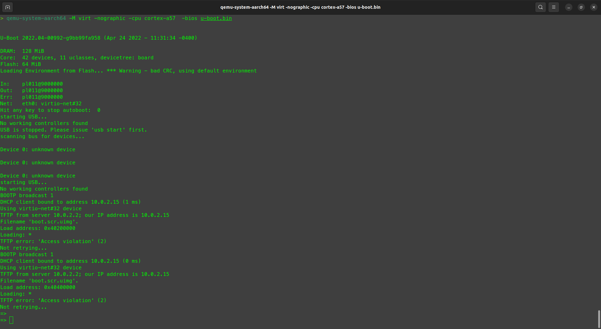

Usando U-boot com qemu

Image by PublicDomainPictures from Pixabay
1. Introdução
A fim de ter um ambiente de testes para aprender sobre o U-Boot, o mais recomendado é criar um ambiente virtual. Para isso, eu escolhi o QEMU, que é altamente configurável.
Essa postagem tem como base a arquitetura aarch64, devido sua larga utilização em sistemas embarcados.
2. Baixando o U-Boot mainline
Basta copiar e colar o código abaixo:
git clone https://source.denx.de/u-boot/u-boot.git
3. Buildando o U-boot
A seguir são definidos alguns passos para gerar o binário do U-boot, que será utilizado pelo QEMU.
3.1. Instalando Dependências
Dependendo do sistema utilizado, alguns pacotes serão necessários para que o processo de build tenha sucesso. No meu ambiente (ubuntu 22.04), foram necessário os seguintes pacotes:
sudo apt install \
flex \
bison \
gcc-aarch64-linux-gnu \
3.2. Definindo a Arquitetura
Para criar um sistema de build limpo, o parâmetro O= foi utilizado. Dentro da pasta do U-Boot, cole o código abaixo:
make O=../out qemu_arm64_defconfig -j16
Se tudo ocorrer bem, a mensagem a seguir deve aparecer:

Uma pasta out foi criada, adicionando todos os itens necessários para a build.
3.3 Gerando o Binário
Dentro da pasta out, cole o código abaixo:
make CROSS_COMPILE=aarch64-linux-gnu- -j16
Se tudo ocorrer corretamente o arquivo u-boot.bin será criado.
4. Carregando o U-boot com QEMU
Para utilizar o QEMU para arquiteturas ARM64 é necessário instalar o pacote:
sudo apt install qemu-system-arm
Dentro da pasta out, execute o seguinte comando:
qemu-system-aarch64 -M virt -nographic -cpu cortex-a57 -bios u-boot.bin
onde o parâmetro -bios é o binario que acabou de ser criado pela nossa build.
Após executar o comando, o u-boot deverá iniciar normalmente:
